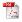

![[]](folder.gif) Historic
images
Shelf
and ownership marks of the Library
Historic
images
Shelf
and ownership marks of the Library Finding aid for Princeton University Library Records, 1734-2008 (bulk 1952-1995): Collection AC123, Mudd Library
![[]](text.gif) 1746-1800
- William S. Dix on the Library during the 18th Century
1746-1800
- William S. Dix on the Library during the 18th Century  1760 - Catalogue of the Books in the Library of the College of New-Jersey, January 29, 1760 compiled by Samuel Davies
1810
to 1987 - Acquisitions, compiled from annual reports and other listings
1873 - William Cullen Bryant speech reprinted in PULC vol 24 no. 3
1873 to 1890 - Frederic Vinton memorandum book relating to the Library [transcribed from manuscript]
1874
- Frederic Vinton 'American College Libraries' 1876 - Princeton entires in the 1876 Centennial survey of libraries in the US
1877
- Frederic Vinton 'Hints for Improved Library Economy Drawn from Usages at Princeton'
1879
- Frederic Vinton 'College of New Jersey Library' 1879 - John F. Hageman, History of Princeton and its Institutions
[ Volume 1 ] [ Volume 2 ]
1880-1895
- Students write about the Princeton library 1884 - Subject Catalogue of the Library of the College of New Jersey compliled
by Frederic Vinton
1896 - List of Exhibits in the Chancellor Green Library, Oct. 20, 21 and 22, 1896
1898 - E.C. Richardson 'University Library'
1898
- E.C. Richardson 'University Library'[transcription] 1898 - 'Seminaries held in the University Library'-Faculty report, adopted regulations, and same for 1908
1899 - Publications issued by or about the Library, 1875-1898
1900
- E.C. Richardson 'Reorganization of the Princeton Library' 1901 - Location of Books in the Library of Princeton University
1904 - W. W. Bishop German Reformation Pamphlets in Princeton University Library
1905
- 'The University Library in 1905' from The Handbook of Princeton
1907 - Finding List for Seminary Libraries [in the Library of Princeton University]
Covering the following collections: Paleographic, Germanic, English, Historical, Political, Mathematical,
Applied Mathematics, Philosophical, Romance (Languages), Economic, Zoological
and the Art Museum Library
1909 - Finding List for the Music Library
1916 - Princeton University Library - Souvenir book prepared for 1916 ALA visit. (184 pages)
also available at Carneige Mellon University
1920 - Report of the Special Committee of the Faculty on the University Library
1920 - vol 1, Classed List of the Princeton University Library
Richardson classification numbers 0000—0999 General Works, Book Sciences, Government Documents,
Periodicals and Encyclopedias (pages 1—92), and
numbers 1000—1999, History and geography (pages 93—476).
1920 - vol 2, Classed List of the Princeton University Library
Richardson classification numbers 2000-2999, Language and Literature
1920 - vol 3, Classed List of the Princeton University Library
Richardson classification numbers 3000-3999, Modern Languages and Literature
1920 - vol 4, Classed List of the Princeton University Library
Richardson classification numbers 4000—4999 Arts (pages 1693—1888);
5000—5999 Theology (pages 1889—2088);
6000-6999 Philosophy and Education (pages 2089—2304)
1920 - vol 5, Classed List of the Princeton University Library
Richardson classification numbers 7000—7999 Social sciences (pages 2305—2532);
8000—8999 Natural Sciences (pages 2533—2884);
9000—9999 Technology (pages 2885—2981)
1920 - vol 6, Classed List of the Princeton University Library
Special Collections
1921 - vol 1, Alphabetical Finding List of the Princeton University Library
A-C
1921 - vol 2, Alphabetical Finding List of the Princeton University Library
D- H
1921 - vol 3, Alphabetical Finding List of the Princeton University Library
I- N
1921 - vol 4, Alphabetical Finding List of the Princeton University Library
O- S
1921 - vol 5, Alphabetical Finding List of the Princeton University Library
T- Z
1921 - Catalogue of the Babylonian Cuneiform Tablets in the Princeton University Library
1933 - E.C. Richardson 'The Use of Printed Cards in Cataloging, Princeton University Library Practice, 1890-1920'
1946 - The Second Princeton Conference. A meeting of the cooperative committee on library building plans held at Princeton University, Princeton, New Jersey, June 12-14, 1946.
1950s - Alexander D. Wainwright on the Parrish Collection
1970 - Earle E.Coleman 'Department of Rare Books and Special Collections'
1975
- William S. Dix 'Princeton University Library'
1986
- President's annual report focusing entirely on the Library
Set 2 of documents relating
to the history of the Princeton University Library,
including 19th century student accounts, newspaper clippings, and other data